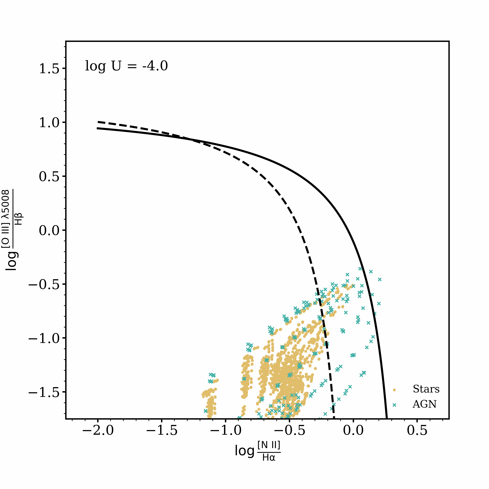
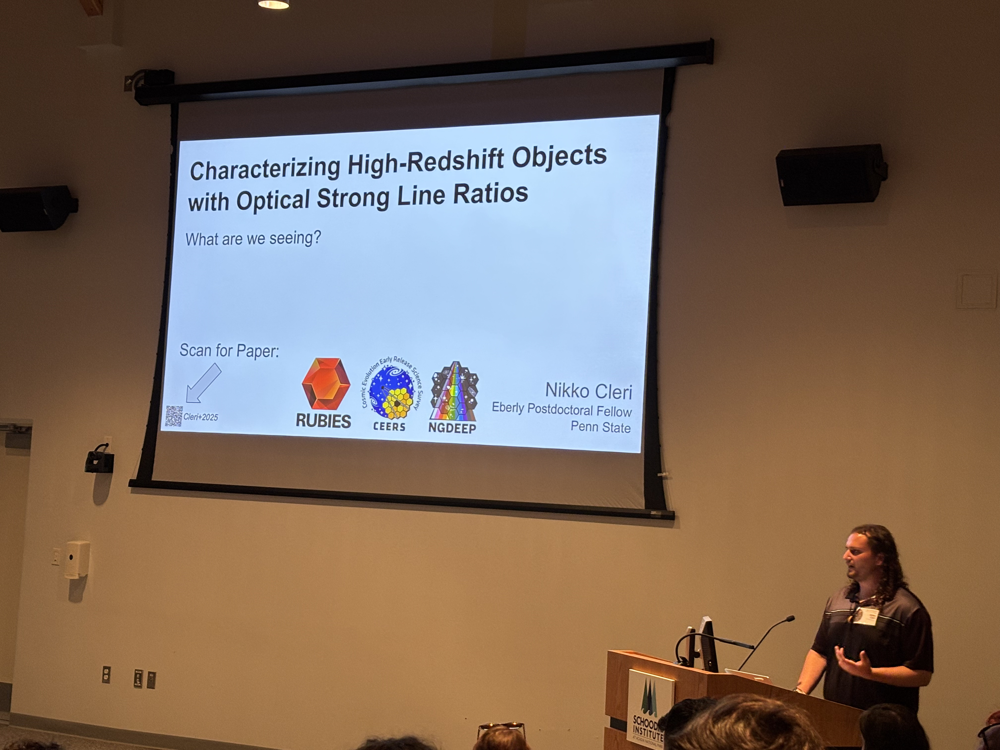
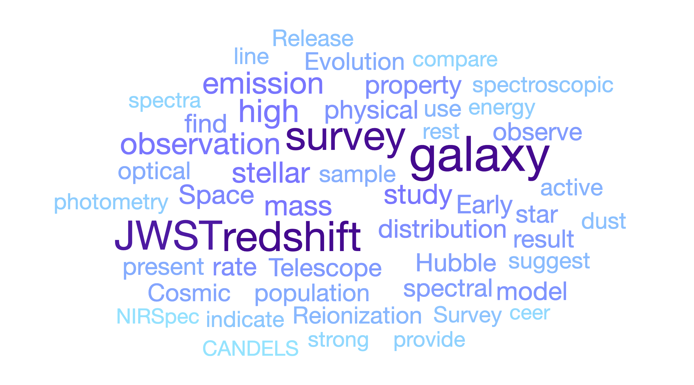

Research

I am an extragalactic astronomer who uses spectroscopy to study galaxies across cosmic time. My work revolves around space-based observatories like the James Webb Space Telescope (JWST). I have had the great privilege of being a part of some wonderful collaborations, including CEERS (pictured above), RUBIES, and several others. Here you will find information about the big science questions I seek to answer.
For anyone who may be interested in working with me or beginning research in my subfield, I have written a brief guide including several group expectations and many useful resources.
What are we seeing?
When observing a galaxy, it is not often trivial to know what produces the light that reaches our telescopes. The spectrum of a galaxy is a critical tool to discern the astrophysical origins of photons energetic enough to ionize gas, whether that be in the interstellar medium around star forming regions, in the broad or narrow line regions around accreting black holes, or from a number of other sources. Much of my work focuses on using spectroscopy to perform this task, particularly for galaxies in the very early Universe.
There exist many methods of performing this diagnosis, including looking at specific emission lines and their strengths relative to other features of the spectrum. Using rest frame optical spectroscopy from JWST and photoionization models, my work has shown that not all diagnostics of ionizing sources are created equal. Particularly, much of my work has focused on the use of emission lines which require much higher energies than those used in the 'BPT' diagram (see the animation here) or similar diagnostics. I argue that the energies required to produce emission lines such as HeII, [Ne V] and other 'very-high' ionization lines (>54eV) are useful probes of black hole accretion disks and exotic stars, including the particularly elusive intermediate-mass black holes and Population III stars.
Cleri et al. 2023a studied a sample of 25 galaxies at 1.4<z<2.3 galaxies with detected [Ne V] emission from HST grism spectroscopy in the CLEAR survey. We found that [Ne V] is strongly correlated with other tracers of accreting black hole activity, including X-ray and mid-infrared emission and rest-frame optical line ratio diagnostics. We advocated that, although the line is often weak, the high ionization energies required to produce [Ne V] (>97 eV) may make it a more direct tracer of the ionizing source than other commonly used diagnostics.
Cleri et al. 2023b studied galaxies at 0<z<9 from HST and JWST spectroscopy. Using this sample along with photoionization models from Cloudy, we constructed the [O III]/Hβ versus [Ne V]/[Ne III] diagram. We showed that this diagram gives discriminating power not only between 'normal' stellar populations and accreting black holes, but also for black holes in the intermediate-mass regime and Population III stars.
Cleri et al. 2025 studied optical strong line ratios as diagnostics of ionizing sources at high redshifts. Using a large suite of photoionization models from Cloudy (see animation), we showed that the [NII]-BPT, VO87, and OHNO diagrams are strong tracers of the ionization parameter and gas-phase metallicity, but not necessarily the ionizing source. The complete library of photoionization models are available on the Science Products page on this website.
How does dust impact our interpretations of galaxies?
Extragalactic star formation is often inferred from UV and optical tracers such as UV continuum luminosities and Hα or other emission line fluxes. These are great measures of recent star formation, except in the presence of dust in the interstellar medium, which preferentially attenuates shorter wavelength light. This dust attenuation can have a dramatic impact on the interpretation of derived quantities such as star formation rates. One potential remedy is the use of longer wavelength tracers which are intrinsically less impacted by dust attenuation.
Cleri et al. 2022 studied a sample of 29 z<0.3 galaxies with detected Paβ emission from HST grism spectroscopy in the CLEAR survey. Paschen lines trace near-instantaneous (<10 Myr) SFRs with the same benefits of the Balmer lines' relative insensitivities to metallicity, temperature, and density, while notably being much less sensitive to interstellar dust attenuation. We also study the implications of Paschen to Balmer line flux ratios, like Paβ/Hα, which can be used as a measure of the interstellar dust attenuation in a galaxy. This is much like the classic Balmer decrement (Hα/Hβ), but can be used for much dustier galaxies since the Balmer lines become too heavily attenuated for accurate measurements.
